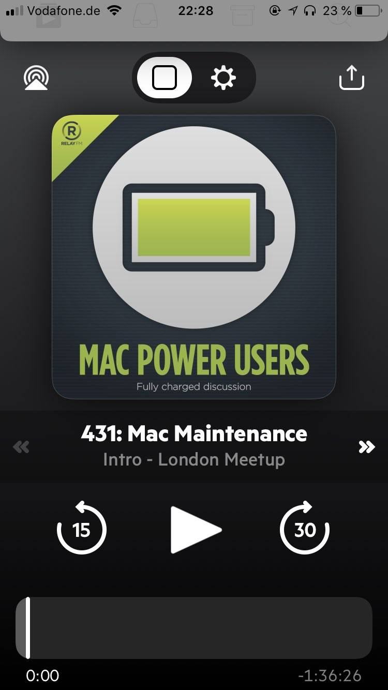

There are a lot of sports that are less enjoyable without crowds cheering but Darts might be the one that is hurt the most.
Let’s hope the atmosphere can return next year.
Sometimes, even 2-trillion company does something right. And, whatever their motives, it’s okay to acknowledge that.
New App Store commissions are great for those who benefit from it, but it won’t - and shouldn’t - be enough to face off the antitrust cases.
I enjoy going by train. In fact we don’t even own a car anymore. But thinking about all the creative ways people wear their masks alone makes me stay at home as much as possible.
I am really enjoying Microblogvember so far.
Posting each day is a nice challenge.
Wandering down along closed restaurants on bars on a Saturday night still feels spooky. Emptiness where there should be joy and life.
Let’s at least hope that the partial lockdown helps!
I’ve been wearing my Apple Watch to sleep for a couple of weeks now but honestly I don’t know why. The alarm is nice and subtle, but that’s the opposite of what I usually need in the morning. And the sleep data feels kinda‚Ķ pointless.
The M1 Macs look like nice improvements. I am curious for some real-life experiences in the coming weeks.
Following the great news about Covid vaccines the first suggestions about who should receive it first were published: Doctors, nurses and the elderly.
Makes sense, but let’s see what will happen when the vaccine actually becomes available.
Politicians use every horrible attacks to push through with their surveillance fetishes, like the most recent attempt to end end-to-end encryption in Europe. The attacker was of course well known to the police. But hey, never pass on such an opportunity.
There are no news like an EU encryption ban to get your blood boiling on a Monday morning.
Another Sunday, another bread.
Taste is great, texture is good, optics still have some potential. But we are getting there.
I am trying to bind myself to some more habits, building a more robust schedule. But some patterns are hard to overcome.
Biden takes the lead in PA. It is still puzzling why I can’t get my head away from election coverage. But hey, I take everything that keeps me away from blowing too much money at Apple preorders.
Looks like Apple finally got the Apple TV and HomePod integration right. Playing video always outputs to the HomePod but music doesn’t start the TV.
I am not that tall, but I still automatically stoop every time I enter a basement. How can taller people manage that?
Supermarkets near us declared the second Covid wave to be over. There was toilet paper, pasta and even flour in stock!
Wish I had this guys optimism.
Keep the faith, guys. We’re gonna win this.
– Joe Biden (@JoeBiden) November 4, 2020
I thought about how to put it, but that sums it up nicely.
Good luck, America. I genuinely believe you’ve got it this time. I’ll be rooting for a return to sanity, decency, and hope from afar.
– Federico Viticci November 3, 2020
One such a rainy, dreary Sunday one needs to find some means to brighten the day up.
So I made some more bread!

I am considering upgrading my Aluminium Series 4 Apple Watch to a Stainless-Steel or Titanium S6. The upgrade isn’t huge, but the new material and the always-on display are tempting‚Ķ
“Developer relations aren’t the best right now, what could we do about it!”
“How about releasing iOS 14 with”, checks wrist, “23 hours notice?”
– Somebody at Apple Park right now.
Second day of the Places VR Festival. If you are around and want so say Hi, you find us in the underground garage.
I am ready for some Epic Apple drama. Let’s just hope it results in some change and not just another backroom deal.
The European Court of Justice just ended the Privacy Shield between the EU and the US because of US surveillance laws.
Another reminder that mass surveillance is violating our basic human rights. I just wish that EU governments would remember that.
Manton Reece - Introducing plug-ins for Micro.blog
Great to see plug-ins coming to micro.blog. I changed a bunch of things in my custom theme, it might be time to refactor the changes into proper plug-ins and open-source them.
Releasing iOS 14 public beta without the exposure notification framework seems like a bad choice.
It’s the main reason why I didn’t install the dev betas yet on my main device.
I wish developers defining keyboard shortcuts would acknowledge that different keyboard layouts exist.
“Apple approves Hey email app, but the fight‚Äôs not over - The Verge”
Not surprising that Apple wants the controversy gone before WWDC kicks off tonight, but none of the fundamental problems of the App Store are resolved by this compromise.
Who would have thought that a hardware company pushing services to appease Wall Street isn’t great for users.
Another holiday means another hike and another cake. This time we made a delicious pieplant-apple cake.
Started to rewatch Scrubs. Mostly as hilarious as I remembered.
I wanted to listen to the podcast as I watch, but my podcast consumption is still really low compared to pre-corona.üì∫üéô
We prepared cheesecake in the morning. It came as a welcome treat after we came back from our small hike. ü•ß
Great news that Germany changed their mind and is now working on a decentralized contact tracing app.
There are disadvantages with both approaches and I don’t necessarily agree that private companies essentially make those decisions, but at least it’s the right one.
First a run üèÉ through the morning sun in the park, now a second breakfast with a smoothie and homemade breakfast buns üçû.
I don’t think there is a better way to start a Sunday ‚òÄÔ∏è.
First day of our online-only university semester, 8 am, and our e-learning-platform is starting to struggle. This is going to be fun.
No, we didn’t order takeaway burger because we weren’t in the mood to cook, we are supporting local businesses üçî .
Nadim Kobeissi: An Investigation Into PEPP-PT
The “open and private” European approach to contact tracing looks neither open nor private anymore.
The bright sides of working from home are the walks during lunch break.
Today, there even was a little snack.

A (late) first entry for @Burk’s April photo challenge: April 15, Glass.
Glass tower in the evening sun
I hate recent Apple product pages. I mean they look nice, but they are barely usable. Just compare the webpage to the page in the Apple Store app. The later still looks good, you can quickly find all information and you can even scroll!
üì∫ I was skeptical but after Chapter 4 of The Mandalorian I am fully on board. It’s interesting and refreshing but still feels like Star Wars.
I get used to reading more again. I am currently reading the Wheel of Time series by Robert Jordan. But with my current pace I probably won’t finish it until the next global pandemic (currently at book 4/12) üìö
Baking and baking and baking and baking (with @Sophia9).

In the midst of the flour and yeast crisis my girlfriend and I have roused a passion for baking. Projects for today: a braided yeast bun and our second attempt at sourdough rolls.
You really notice that a lot of people are at home and don’t have much to do. The local park was packed with runners as well as people walking and laying on the lawn.
So I thought I’d share my top five tips how I try to get the very most out of my day-to-day work as a remote
‚Äì “Working remotely | Swift by Sundell”
Some nice tips for all of us who might need to work remote, soon.
What is your favorite, subscription or not, photo editor on iPhone?
I don’t really want to bring my iPad on my next trip.
We had a great day at Burgers Zoo in Arnhem, Netherlands, yesterday. I hope to share some more pictures in the next days.
After nearly canceling my Arcade subscription I found Grindstone which comes close to What the Golf?.
What are some of your favorites?


“Building blocks for Augmented Reality - Newsportal - Ruhr-University Bochum”
It is nice to be featured on your universities homepage.
“How the spread of child abuse imagery online is changing the debate over encryption - The Verge”
Even though I don’t agree with all points presented an interesting read on encryption in social media.
I am keen to try Apple Arcade but I don’t have any controllers for my TV. I am definitely not buying a PS4 or Xbox Controller.
I might just wait until Apple adds support for the Switch Pro Controller ü§î
What is worse: the fact that iOS 13 begs you to please by Apple Care+ on the main settings page or that the message isn’t even localized?
You screwed up if German public media advises to wait and not update to iOS 13.
I am glad I usually don’t visit Disneyland after dark. Otherwise this would almost make me upgrade my phone, again.
In response to concerns raised by a Guardian story last week over how recordings of Siri queries are used for quality control, Apple is suspending the program world wide.
Apple suspends Siri response grading in response to privacy concerns | TechCrunch
The only right thing to do, but a shame that they only acted after negative press.
“Intention to fine British Airways ¬£183.39m under GDPR for data breach | ICO”
That’s 1.4 percent of their annual worldwide revenue.


WWDC wrap up
I finally had some time to catch up with all the WWDC news, watched the Platform State of the Union and played with iPadOS. So I wanted to take some time to wrap my head around the most important announcements.
iOS 
It wasn’t a big year for iOS. We got more stability improvements, which are always welcome. We also got a system-wide Dark Mode. Everyone seems to lose their minds around this feature. I already use a Dark Mode in a few apps and I didn’t miss it from iOS, but it is a welcome change nonetheless.
Apple again focused on Privacy. Sign In with Apple is a welcome service especially because it hides your email from the service. Password managers made it possible for me to use and manage unique accounts for all websites so I never used any of the services out there, like Google or Facebook (I mean, seriously, log in with Facebook? Who even considers this?).
The biggest improvement for me are Siri Shortcuts. They were already really powerful last year but now they delivered on a few key areas. They added an action to set a target AirPlay device and a lot of triggers to run a shortcut automatically. And I mean a lot. Time of day, location based, when connecting to CarPlay (does this also work with your car’s Bluetooth, like DnD While Driving?) are the obvious, but think of the kind of automation you can trigger when opening a specific app, connecting to a specific Wifi, read an NFC tag or when snoozing your alarm?
iPadOS
iOS on iPad becomes iPadOS but as far as I can tell this is only a marketing move. With iOS 11 iOS diverged between iPhone and iPad so this step kinda makes sense. The great thing about that is that it pushes pressure on Apple to iterate and add specific iPad features every year.
Some changes made to iPad this year are confusing. The new gestures aren’t intuitive at all. Those three finger gestures are hard to remember and impossible to discover and only offer a small benefit. The multitasking system got a lot more powerful with the ability to open multiple windows. On the other side the already complex multi-tasking system got even more complex without addressing some of its flaws, like requiring to invoke gestures to enable it.
One really welcome change was the updated Files.app. It got a lot more Mac-like and allows for SMB and USB devices and servers.
Apple Watch
There isn’t much to say about Apple Watch. We got new first-party Watch Faces but still no third-party ones. We got an App Store. I don’t think that is a feature getting much use right now considering that even navigating installed apps is cumbersome. This will of course change when the Apple Watch gets more independent from the iPhone.
During the Keynote they blew right by the biggest change for developers: a full UI framework! This should allow developers to build way better apps. In times of major players abandoning their Watch apps this is might come to late.
AppleTV and HomePod
AppleTV and HomePod both got multi-user support, which was much needed. I am looking forward to try Voice Recognition and remain optimistic that it works.
Both AppleTV and HomePod are powered by incredible powerful processors that don’t get much use when you are not at home. So using this idle processing power to encrypt and analyze HomeKit security camera images is a great idea.
Mac
The biggest story for the Mac was the unveil of the Mac Pro. It is insanely powerful and obviously not build for a very small and special audience. That’s why price isn’t a big deal. Same goes for the monitor. Still, $ 999 for a stand simply isn’t a great look. Making this as a separate purchase wasn’t a good idea from a PR perspective. At last Apple showed that they are still willing and capable to build great computers which should leave us optimistic for the future of the Mac Pro.
I want Apple to make a less expansive, less capable monitor for it’s customers though.
Developer tools
This was of course the developer conference and the focus of the whole week is on developer tools and SDKs. And they are a lot of great changes there.
ARKit
I’m an AR guy. I like AR and I was building Augmented Reality apps for years. So I always get excited when Apple shows off there new features. Although I admit that the Keynote stuff wasn’t great. Apple Pay in AR quick look seems to be pointless and the Minecraft Demo was kinda boring. Still, the new features for ARKit are welcome additions. Pose recognition and People Occlusion could enable great new experiences.
Apple also introduced RealityKit. Until now, most AR apps were built using full gaming engines like Unreal, Unity3D or Apple’s SceneKit. RealityKit is a new Swift framework specifically for building AR applications. It offers some nice features but I still need some time to figure everything out.
Marzipan Catalyst and SwiftUI
We all thought Marzipan would be the story of the year. I think we were wrong. Not only because Marzipan was rebranded to Project Catalyst (or UIKit for Mac in the documentation) but because Apple introduced a completely new, declarative UI framework: SwiftUI. Again I need some time to figure everything out but it looks like a fresh new take on UI development.
Because it only works on macOS 10.15 and iOS 13 we will probably need a couple of years until our favourite apps adapt it though.
Because it only works on macOS 10.15 and iOS 13 we will probably need a couple of years until our favourite apps adapt it though.
I am looking forward to play with all the new SDKs and betas in the summer. If you have any comments get in touch with me on micro.blog.
Looking through the new and updated Frameworks only confirms that this is a massive year. Not only in the big areas but also the little things. CoreNFC can now read and write all kinds of NFC tags, which is awesome.
Shortcuts can run automatically when you arrive at a location, toggle settings like AirPlane mode, NFC or when you open a specific app.
You can scan a document directly from Files.app, it prompts you for a location to safr, and you can select “on this device” and create a folder there!!
Apple has full tutorials online for SwiftUI if you don’t want to wait for any sessions.
Shared AR Experiences
RealityKit simplifies building shared AR experiences by taking on the hard work of networking, such as maintaining a consistent state, optimizing network traffic, handling packet loss, or performing ownership transfers.
Augmented Reality - Reality Composer - Apple Developer
That was super hard to do before.
What the iPad needs for PC users to consider to switch to iPad:
Beige color, defragment tools, regedit, Ctrl-Alt-Del…
That was a fun note.
Let’s if @manton can curate the WWDC discover feed for the next 2.5 hours :D
One side of the jacket is a classic black with small WWDC branding on the chest. The other side is bright and filled with icons and drawings, reminiscent of the other WWDC artwork we’ve seen so far.
Apple gifts WWDC 2019 attendees swag bag- 9to5Mac
Those jackets look great üëç
WWDC is nearly here. My hopes:
- Marzipan allowing for usable Mac apps that also push the iPad forward
- Better iPad multitasking and file managment
- ARKit and Siri Shortcuts enhancements
- HomePod multi user support
Building a custom Animoji with ARKit and Blender
This post takes a look at ARKit Face Tracking on iPhone X, XS, XR and iPad Pro 2018. It is based on my WWDC 2019 Scholarship Submission. I am not an artist. All models I created for this post are just for illustration purposes. But I want to look into the code required to create your own Animoji. This post is divided into four steps:
- Basics of ARKit Face Tracking
- Creating a character model in Blender
- Getting the character into SceneKit
- Animating the character
ARKit Face Tracking
ARKit Face Tracking is easy to setup.
Simply start an ARFaceTrackingConfiguration where it is supported and ARKit sets everything up for your.
When a face is detected by the True Depth Camera ARKit creates an ARFaceAnchor.
Then, make your ViewController confirm to ARSCNViewDelegate and implement
renderer(_:didAdd:for:) where you add and load your face.
func renderer(_ renderer: SCNSceneRenderer, didAdd node: SCNNode, for anchor: ARAnchor) {
guard anchor is ARFaceAnchor else {
return
}
node.addChildNode(characterNode)
}To receive updated facial expressions also implement the renderer(_didUpdate:for:) method as well.
func renderer(_ renderer: SCNSceneRenderer, didUpdate node: SCNNode, for anchor: ARAnchor) {
DispatchQueue.main.async {
guard let face = anchor as? ARFaceAnchor else {
return
}
self.process(face.blendShapes)
}
}To extract the facial expressions from a face use the .blendShapes property.
ARKit automatically assigns certain facial expressions a weight from 0 to 1.
Examples for BlendShapeLocations are for example .eyeBlinkLeft or .jawOpen.
The meaning if the weight for each blend shape can be found in the documentation.
Creating a character model in Blender
Now that we now about the basics of Face Tracking let’s take a look into how to create an animatable character in Blender.
Let’s assume you have a simple face model in blender with a neutral facial expression.
Blender supports shape keys.
These are modification you can do on the base geometry.
Press the plus button (you need to be in object mode).
This creates the neutral Basis.
Now modify your character, for example by closing the left eye
(only move vertices, all shapes need to be topologically identical, that is,
have the same number of vertices, edges and faces).
Then press the plus button again and name the key e.g. CloseLeftEye.
As you can see, you can assign a weight between 0 and 1 for the shape
(sounds familiar?).
Now, create a shape key for every ShapeBlendLocation you want to support in ARKit.
As you can see you can then individually assign an arbitary weight to each shape.
Blender than applies all shape modifications at the same time.

Get the character into SceneKit
Export the model as an .dae file (check that Include Shape Keys is set in the options).
For SceneKit to read this file you need to fix a few properties in the file.
Thankfully, there is a great tool by JonAlle on GitHub that does this for us.
Then add the file to your .scnassets where you can convert it to an .scn file.
In the Xcode editor you can also confirm that the shape keys are working as expected.
Animating the character
In SceneKit all shape keys are referenced by a number in which is was defined in Blender. To make working with those easier we can create a simple enum that makes the reference explicit.
enum Modifier: Int {
case closeLeftEye = 0
case closeRightEye
case openMouth
case smileLeft
case smileRight
case liftLeftBrow
case liftRightBrow
case tongueOut
}We than use the SCNMorpherClass to apply the differnt keys with their weights.
func changeModifiers(_ modifiers: [Modifier: CGFloat]) {
for (modifier, value) in modifiers {
characterNode.morpher?.setWeight(value, forTargetAt: modifier.rawValue)
}
}All we have to do now is to change the weights when we get a new update for our face anchor.
func process(_ blendShapes: [ARFaceAnchor.BlendShapeLocation : NSNumber]) {
let modifiers = blendShapesToModifiers(blendShapes)
changeModifiers(modifiers)
}
func blendShapesToModifiers(_ blendShapes: [ARFaceAnchor.BlendShapeLocation : NSNumber]) -> [CharacterController.Modifier: CGFloat] {
var modifiers: [CharacterController.Modifier: CGFloat] = [:]
if let leftEye = blendShapes[.eyeBlinkRight] {
modifiers[.closeLeftEye] = CGFloat(truncating: leftEye)
}
if let rightEye = blendShapes[.eyeBlinkLeft] {
modifiers[.closeRightEye] = CGFloat(truncating: rightEye)
}
if let mouthOpen = blendShapes[.jawOpen] {
modifiers[.openMouth] = CGFloat(truncating: mouthOpen)
}
if let smileLeft = blendShapes[.mouthSmileRight] {
modifiers[.smileLeft] = CGFloat(truncating: smileLeft)
}
if let smileRight = blendShapes[.mouthSmileLeft] {
modifiers[.smileRight] = CGFloat(truncating: smileRight)
}
if let browLeft = blendShapes[.browDownRight] {
modifiers[.liftLeftBrow] = 1 - CGFloat(truncating: browLeft)
}
if let browRight = blendShapes[.browDownLeft] {
modifiers[.liftRightBrow] = 1 - CGFloat(truncating: browRight)
}
if let tongue = blendShapes[.tongueOut] {
modifiers[.tongueOut] = CGFloat(truncating: tongue)
}
return modifiers
}That’s it.
Using the SCNMorpher together with Blender’s shape keys and ARKit blend shapes is super easy to setup.
If you (like me) are completely untalented in creating 3D models you can simply download one from the internet. If you are a student you can use the Autodesk Character Generator, where you can create character models in an RPG-like fashion, for free. They even support shape keys!
My custom theme now supports different layouts for blog posts as well as micro posts and displays photos in a grid.
Building a custom homepage for micro.blog
I spent the last days building a custom theme for my blog.
You can find the source on GitHub.
It is based on the Hyde Theme and the modifications Manton made for micro.blog.
I am pretty happy with how it turned out. What du you think? You can find some details about what I created below.
Features
Separate between posts and microposts
I wanted to separate between long blog posts and microblog posts. While I could use micro.blog categories for that I didn’t want to remember to tag every microblog post with a special category, especially because Icro, my preferred iOS client, does not support categories at all.
I created three categories, Blog, Microblog, Photo. Micro.blog can tag every photo automatically, but unfortunately you can’t set a default category. That’s why I overwrote the layouts/categories/category.html template.
This checks if the current category is microblog and renders every post in a special micro-format (defined at layouts/post/micro.html). Other categories render only posts that are tagged with the category.
For Hugo to create the /categories/microblog/ page I needed to tag at least one post with that category.
Theme adjustments
I also made a few adjustments for the theme.
Avatar image in sidebar
I wanted to make the theme a little bit more personal. That’s why I added a small avatar to the sidebar.
Dark mode support
If you are running Safari on macOS the site will either show you a dark or light theme, depending on your settings.

Notch support
I alsp edited the css to include the notch on iPhone. Here is how it looks like.

Conclusion
I used a lot of hacks to get the theme like I wanted to.
I don’t feel proud for all of them but at least it works.
Feel free to check out the theme on GitHub, modify it or use it as is for your blog. I plan to expose a few more settings to the config.json file to make it easy to adopt the theme for your needs.
Apple updated MacBook Pro with faster 8th- and 9th-generation Intel Core processors, bringing eight cores to MacBook Pro for the first time.
Apple introduces first 8-core MacBook Pro, the fastest Mac notebook ever - Apple
So no new MacBook Pro at WWDC I guess…
“The [US] government has [‚Ķ] concerns about [‚Ķ] technology [‚Ķ] that takes [‚Ķ] data into the territory of an authoritarian state that permits its intelligence services to have unfettered access to that data [‚Ķ]”
Funny thing to hear from the US government.
Great that micro.blog and @manton get some well-deserved attention from the New Yorker article.
Welcome to all the new people here.
Also, I feel a little famous now üòÑ
Is Netflix integrated into the new Apple TV app? I just got a recommendation for Star Trek: Discovery which opened the Netflix app.
All in all I feel that the latest GoT episode was one of the better ones this season. Sure, most character development was a little rushed, but I think we will see something similar in the books (that is, if we ever see the books). üçøüì∫
Both Conservative and Labour members of Parliament keep voting down one plan after another, looking for the perfect fix, the pain-free exit from the E.U. But there is none, because you can’t fix stupid.
Opinion | The United Kingdom Has Gone Mad - The New York Times
If you’re working on a groundbreaking, unreleased game and would like it to be considered for Apple Arcade, we’d love to hear from you.
Apple Arcade - Apple Developer
Apple allows developers to apply for Apple Arcade. I am really curious about who gets in.
Mozilla on the new copyright regulation:
With a chance to bring copyright rules into the 21st century the EU [has] […] handed the power back to large US owned record labels, film studios and big tech.
TechCrunch, citing Julia Rede’s speech in the European Parliament
“The most tragic thing about this process is a new generation who are voting in the European elections for the first time this year are learning a lesson: Your protests aren’t worth anything, politics will spread lies about you, and won’t care for factual arguments if geopolitical interests are at stake,”
The EU had the chance to create a modern copyright legislation for the web. Instead, they chose to ignore the concerns of (mostly young) voters and pushed through with the lobbyists agenda.
What a great way to teach young people about democratic values.
I am absolutly unenthusiastic for todays Apple event. There won’t be new hardware and the last thing I need are even more subscriptions.
I’m not super happy with my final Playground but it’s worth a try. Best of luck to everyone else who applied.
Not it’s 3 weeks of waiting for the results. In the meantime, I hope to publish a blog post or two about my work.
Today the German Wikipedia is unavailable to protest against the EU copyright reform.
My WWDC scholarship submission is starting to flesh out. I don’t think I will win again and I don’t even know if I could attend if I’d did, but it is fun little project.
Showerthought: Would customers benefit if Apple were forced to build there services on top of publicly available APIs? That could mean real Siri integration, alternatives to iCloud backups and more. I feel like the answer could be yes.
I can’t wait to try them out! ‚Äì 9to5mac: Apple AR headset reportedly starting production later this year
It’s been a great year 2018.
I took the holidays off to relax a little but I have set myself some ambitious goals for 2019. Can’t wait to get started.
Is Apple making the right map?
Finally had time to read Justin O‚ÄôBeirne excellent post about Apple’s new Map, an in-depth dive into all the changes (the good and bad) Apple Mad this year in California.
As much as I like the new iPad Pro hardware it would be over 1200€ to replace my iPad Pro 9.7. Maybe next year
Finally updated my Mac to Mojave. Not sure how I like it.
The Marzipan apps are just bad, it took me a while to get my tools work with the new privacy dialogs and I don’t like dark mode. But I have orange as my accent color, wich is nice!
This Micro Monday I’d like to recommend @sattelknecht, where Max and Philipp will document their 80 day bicycle tour through South East Asia.
Nearly done with automating my packing list with Shortcuts and OmniFocus. Thanks @rosemaryorchard and @macsparky!
I am not surprised we haven’t seen iPads or Macs, but they didn’t even mentioned AirPower or Qi charging at all.
Following Twitter, Micro.blog and the Mac Power Users Event Streaming Thread is going to be fun!
I am ready!
iMazing 2.6.4 has been released Aug 16, 2018 but is still not available on Setapp where you pay a subscription and already own every upgrade.

{kind=link}
{kind=link}
{kind=link}
{kind=link}
{kind=link}
{kind=link}
{kind=link}
{kind=link}
{kind=link}
{kind=link}
{kind=link}
{kind=link}
{kind=link}
{kind=link}
{kind=link}
The HomePod gained (limited) Siri Shortcuts support! Unfortunately it seems like all shortcuts run on the phone, not on the HomePod itself right now.
Auto-connect to a VPN with a configuration profile
This small post describes how to create an On-Demand VPN profile for iOS (and macOS, too).
Why you need VPN
Public wifi is a great thing, especially if you have limited mobile data caps or are on vacation in another country. But public wifi also poses a security risk: not only can a third party monitor the websites you visit, they could steal personal information or even infect you with malware. One way to help protect you is through VPN: this is a mechanism to route all your traffic securely through another party. While there are services that offer VPN for a few dollars a month (stay away from “free” VPNs!) I do not need them often enough to justify the expense.
Luckily, my router at home allows to be used as a VPN server. All I need to do is to configure it, add the authentication details to all my devices, and toggle the VPN switch every time I connect to an unknown network. Sounds cumbersome? Because it is. Not only do I have to enter all the details a lot of times for me and my girlfriend, I would also often forget to connect, especially when my iPhones reconnects to a known hotspot without me realising. Thankfully, one can configure iOS devices and macs in a way to automatically connect to a VPN whenever they are connected to a non-whitelisted network.
Setup an On-Demand VPN Server using configuration profiles
The solution the problem is called Configuration Profiles. These are files you add to your Apple device that contain configuration details like wifi passwords, email accounts, SSL certificates or VPN credentials.
The easiest way to create a new profile is through Apple Configurator - a free mac app by Apple. Download it from the Mac App Store, create a new profile and setup your VPN details like the server and the authentication name.
! If you want to use your own router as a VPN server you need a way to connect to it when on the road: ! You either need a dedicated, static IP adress (most ISP don’t offer those to non-business customers) or use dynamic DNS.
Unfortunately, you cannot create an On-Demand-VPN through the GUI,
but .mobileconfig files are just XML files you can open in your favourite text editor.
<?xml version="1.0" encoding="UTF-8"?>
<!DOCTYPE plist PUBLIC "-//Apple//DTD PLIST 1.0//EN" "[www.apple.com/DTDs/Prop...](http://www.apple.com/DTDs/PropertyList-1.0.dtd)">
<plist version="1.0">
<dict>
<key>PayloadContent</key>
<array>
<dict>
<key>IPSec</key>
<dict>
<key>AuthenticationMethod</key>
**...**To add on-demand rules we need add some parameters directly before the AuthentificationMethod:
<key>OnDemandEnabled</key>
<integer>1</integer>The first step is to enable on-demand vpn. Then we start add our rules:
<key>OnDemandRules</key>
<array>
<dict>
<key>Action</key>
<string>Disconnect</string>
<key>InterfaceTypeMatch</key>
<string>WiFi</string>
<key>SSIDMatch</key>
<array>
<string>your-first-whitlested-wifi-ssid</string>
<string>your-second-whitelisted-wifi-ssid</string>
</array>
</dict>
<dict>
<key>Action</key>
<string>Connect</string>
<key>InterfaceTypeMatch</key>
<string>WiFi</string>
</dict>
<dict>
<key>Action</key>
<string>Disconnect</string>
<key>InterfaceTypeMatch</key>
<string>Cellular</string>
</dict>
<dict>
<key>Action</key>
<string>Disconnect</string>
</dict>
</array>The rules are an array of actions. The order of actions is important!
The first action is out whitelist:
Disconnect from the VPN whenever the SSID of the currently connected wifi is either your-first-whitlested-wifi-ssid or your-second-whitelisted-wifi-ssid.
You can add as many names as you need there.
The second block means that the device should connect to VPN whenever it is connected to wifi. Since the order is important this will not be executed for the whitelisted SSIDs. The third block is necessary because we do not want to connect to VPN on mobile data. The last block just tells the system to disconnect from the VPN whenever no other conditions are met.
Share the profile to all devices (iOS and macOS are supported) and stop worrying about public wifi.
Conclusion
When you are connected to public wifi you need VPN. If you do not want to pay for a service and your router supports it you can setup an on-demand VPN on you iOS or Mac devices that automatically connects whenever you are on an unknown wifi network.
Configuration profiles in general are pretty powerful. You could for example edit the on-demand rules to automatically connect only for special hostnames. Check out the documentation at developer.apple.com.
{kind=link}
{kind=link}
{kind=link}
{kind=link}
{kind=link}
{kind=link}
{kind=link}
{kind=link}
Is it worrying or comforting that the 2018 MacBook Pro is not included in the keyboard service program?
WWDC recap
This years WWDC is over and I am already back in Germany. I had an intense week with a lot of great experiences and this post is my attempt to process and recap all the great things that happened.
Announcements
The keynote is the most important part of WWDC. At least this was my experiences from the last years. This years keynote was ‚Äì lets say underwhelming. Tim Cook set the expectations right at the start: “This WWDC is all about software.” So no new Hardware, no new MacBook Pros, no update to the iPhone SE, iPads or even AirPower. But this is a conference for developers, and they want to talk about software (although a new MacBook Pro was the one thing everyone secretly hoped for when I talked with everyone on Sunday.)
iOS 12 looks exciting, with great stuff like ARKit 2 and Shortcuts. I am playing around with both APIs right now and can’t wait to see how developers will use those in September. The other updates were a little disappointing. Craig introduced macOS Mojave saying they had “power users in mind” and the only real no feature is Dark Mode. Which is a welcome change but really all we got for the Mac. Project Marzipan, bringing UIKit to the Mac, looks promising, It was only a sneak peak and we will only learn details at WWDC next year, but it could change the software we have available on the Mac. watchOS brings some small but welcome features, most importantly third party integrations to the Siri Watchface. It is also interesting that Apple did not improve watchKit (at least they did not talk about it). Instead they bring interactive notifications and shortcuts to the watch, both work without a watch app at all. That is an interesting idea: Notifications and short interactions are, besides fitness apps, probably the only real use cases for the watch anyway, so way bother with third party apps at all?
The week
Tuesday to Friday I spent most of my time at the Conference Center – in sessions, labs or just working and chatting with other scholars and developers. The evenings where great as well. Either relaxing with some other scholars or at one of the parties, most importantly the Bash. One fun thing about San Jose during WWDC is that everyone seem to be in town just for Apple. The atmosphere in the town was great, starting by the Apple staff from all across North America, flown to California just to cheer for us. Everyone, staff, attendees and engineers were incredible enthusiastic the whole week. It was just a great experience.
Scholarship
As a scholarship recipient Apple took extra care of us, Starting by provided lodging at San Jose State University to an orientation on Sunday at Steve Jobs Theater and reserved seating at the Keynote. They also provided a special scholarship lounge, but I did not spent a lot of time there. It was dark, the AC was way to cold and you felt isolated. But you could always meet great scholars there and you had a chance to take a break from the busy conference.
WWDC is a great experience and it is awesome that Apple allowed me to see the conference in person. Watching a keynote in a livestream will probably never feel the same way again.
Any comments? Get in touch with me on micro.blog.
In less then 24 hours 10 members of the European Parliament decide on the fate of the free internet.
Art 11 and 13 would implement a link tax and upload filters for user created content. Now is your best chance to call them and change their mind.
The HomePod launched in Germany today. But it isn’t even shown on the German Apple homepage ‚Äì Unlike even the Apple TV 4K.
Apple really doesn’t seem to confident in the HomePod.
{kind=link}
{kind=link}
{kind=link}
{kind=link}
{kind=link}
{kind=link}
{kind=link}
I was just watching the Siri Shortcuts session from WWDC and it feels like Apple is just gonna kill third party watch apps instead of improving watchKit.
Both notifications and Siri shortcuts can show a custom UI even without an installed watch app.
Siro shortcuts are probably the most interesting addition in iOS 12. Can’t wait to try them out in September. Shortcuts: A New Vision for Siri and iOS Automation ‚Äì MacStories
It was an intense week at #WWDC this year. I met so many great people and learned a lot. But I will still need a lot of time to let it all sink, watch some of the sessions I missed and find some time to play around with new APIs.
What are you most excited about?
What better way to start off the day then standing in line. I don’t know why but I need one of those WWDC T-Shirts.
Finally have some time to recap. Thanks again to @ctm, @dougbeal, @joakimkemeny, @apulianas @jeffwatkins, @hartIco and all the others from the micro.blog meetup. It was geat meeting you all.
Had a great day. At the WWDC conference, the Music on the plaza event as well as the micro.blog meetup today.
There is so much going on, might be time to write down all my thoughts in a blog post ü§î
The iOS 12 betas are incredible smooth both on my iPhone 8 and on my 9.7 iPad Pro.
I was not bold enough to install the macOS beta and from what I was seeing at the conference that is a good thing.
After the State of the Union I am really looking forward to ARKit 2. Installing the Xcode Beta right now. 3D object scanning and recongition as well as shared experiences open up a lot of new possibilites.
We visited Steve Jobs Theater yesterday and have perfect seats for the keynote now. WWDC is great so far!
Apple announced special Apple Watch Acitivity Challenges for WWDC attendees.
Individuals who earn 200 points or more during the challenge will receive a reward
WWDC schedule is up. Only 1 ARKit session announced so far, I really hope they will talk about some new APIs during the keyboard. Object tracking would be awesome!
Thanks to GDPR, WhatsApp now shares personal data with Facebook, ignoring German court rulings.
Has anyone in the EU tried to object against the data sharing yet?
Federico Viticci over at macstories.net wrote a great story about his path to a healthier lifestyle. It is a great read I can highly recommend. jl-siewert.de
Second Life
Federico Viticci over at macstories.net wrote a great story about his path to a healthier lifestyle. He talks about tech and apps, but thats not what the story is about. It is about purpose, the goal you want to reach and not (soley) about the tools needed on the way.
I’ve been enjoying everything more ‚Äì from writing stories to having dinner with my girlfriend or going to the movies with friends ‚Äì because I invested in improving every aspect of myself that I didn’t like anymore. It’s not necessarily about the Apple Watch or Headspace as specific examples ‚Äì it’s about the deeper commitment to physical exercise and a healthy lifestyle; it’s about taking my mental health just as seriously; and it’s about making gratitude a cornerstone of my existence because I survived cancer, I still have the job of my dreams, and now it’s my turn to give back.
Less then 2 weeks until WWDC. Can you tell I am excited? So excited I actually wrote my very first blog post on jl-siewert.de (it turned out way to long…).
What do you hope to see this year?
WWDC 2018 expectations
WWDC 2018 starts at June 4th and is less then 2 weeks away. It is the very first (and probably only) WWDC I will attend in person (I won a scholarship) so I am pretty excited. But the rumours suggest a pretty small update, at least for iOS, so I just want to sum up my thoughts and expectations about this years conference.
iOS
Lets start with iOS. For years the iOS update was the highlight of the WWDC keynote. This could be different this year. Back in January it was [rumoured] that iOS 12 will focus on reliability and performance. This is a very welcome change since especially iOS 11.0 had quite a few issues for a lot of people and some highlighted features from WWDC 2016, like Messages in the Cloud, are still not available to end-users. Laying a foundation for a big update next year sounds like a very good idea.
Watching the keynote for Google IO and the new features of Android P one thing that catched my eye was Googles take on digital wellbeing. We all spend to much time with our phones. Giving the users more insights on how he as spent his time is a great feature, one that I hope Apple integrates as well this year. This could also be coupled with more parental control.
ARKit
The framework I am most excited about is ARKit. Apple just recently introduced ARKit 1.5 in iOS 11.3 with support for image markers, vertical planes and support for higher resolution and autofocus. I hope the continue this path and introduce ARKit (2.0?) with iOS 12. One feature ARKit is currently missing are natural markers. Other frameworks, like [Vuforia] or even Metaio before they were bought by Apple, allow to find objects based on 3D edge models. This allows virtual content to be registred in the world without the need for image markers and is probably how Apple has built the AR demo in the Apple Park Visitor Center.
watchOS
WatchOS is the one area where I have the biggest hopes for. Most watchOS apps today suck. I only use a handful of them and many developers, like for example Twitter, are removing there Apple Watch companion apps.
Marco Arment wrote a great post about [the problems of watchKit]. He suggests one solution: Getting rid of watchKit and giving developers access to the same APIs Apple is using for the stock apps. I fully agree. As long as Apple does not open up the Watch, for apps as well as for example third-party wallpapers, the Apple Watch will only be a fitness tracker and notification helper. Will those changes come in watchOS 5 in June? Maybe. Probably not. But a boy can dream, right?
tvOS and HomePod
I don’t own a HomePod (yet). But for what I have read it suffers from the very same problem as the Apple TV. It only allows one user.
Both devices are made for the living room or the kitchen, where the whole family comes together. It should be used by the whole family. But that is not a great experience. Both with music and with TV shows on the TV all your viewing history gets added to a single, linear place and only syncs to one iCloud account. This is not a real problem for me and my so for TV shows, since we mostly use the TV for shows we watch together and our iPads for the rest, but it will become a problem if we ever get a HomePod. This showed when we tried to add the AirPods to the Apple TV. Mine were already paired through iCloud. But when we manually paired hers through the Bluetooth interface they were added to my iCloud account causing a whole lot of problems. True multi-user support would be a welcome change.
Siri
People like to complain about Siri. I only ever use here for reminders, alarms and timers. I don’t see much more use cases for personal assistants right now (also the Google Duplex demo was really great, from a tech point of view). The one thing I really dislike about Siri is the fragmentation. Why can’t Siri set a timer on the Mac, or control the lights. Why can she add a note on my phone, but not the watch? Apple should find a way to make Siri more integrated on all my personal device, so my Watch can execute commands on my phone, the Mac or the HomePod.
I think we will mostly see improvements and not that many main new and shiny features. But its gonna be exciting anyway. I am really looking forward to a great week in San Jose!
What do you think? Get in touch with me on micro.blog!
The new podcadt player in Castro 3 looks great.
I am using Castro primarly because of the Inbox feature for the last couple of month and really like it, but I am still conflicted about the subscription model.

Just two weeks until WWDC…
I am still not sure what to expact from the actual conference, but I am looking forward to meet great people there.